Install
You need 64-bit Windows 10 or newer and a graphics card with OpenGL 3.3.
- Download
AKSIOMA-Knots-1.0.0-Setup.exefrom the latest release. - Run it. If Windows shows "Windows protected your PC", choose More info, then Run anyway. The installer is not signed yet.
- Choose English or Albanian, and whether to install for yourself (no administrator rights needed) or for everyone.
The program speaks Albanian on an Albanian Windows and English everywhere else. You can change this in Settings at any time. Files ending in .aknot open in AKSIOMA Knots when double-clicked.
On the first start a short tour of three steps points at the knot list, the tool rail and the Photo button. Skip it if you like; Help > Show the tour brings it back.
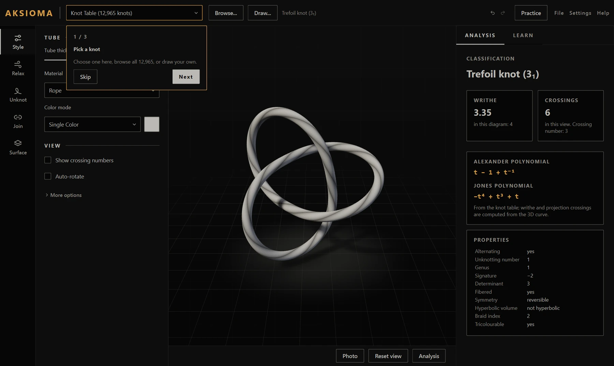
The window
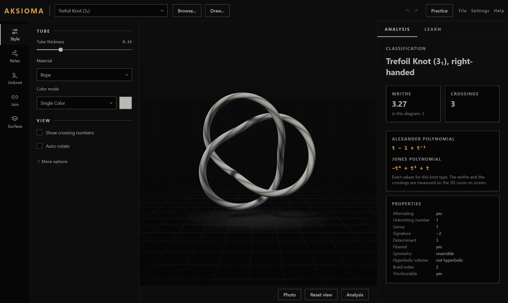
| Part | What it is for |
|---|---|
| 1. Knot bar | The knot list, Browse... and Draw... |
| 2. Tool rail | Style, Relax, Unknot, Join, Surface. Click the open tool again to fold its panel away. |
| 3. Tool panel | The controls of the tool you chose. |
| 4. 3D view | The knot. Turn it, move it, zoom it. |
| 5. View bar | Photo, Reset view and Analysis. Playback and train controls appear here when needed. |
| 6. Analysis panel | The knot's name and invariants, and a Learn tab that explains them. |
| 7. Top right | Undo, redo, Practice, File, Settings and Help. |
The program remembers which tool was open, which panels were folded and which tab you were reading.
Find anything
Press Ctrl K and type. The list covers menu commands, tools, actions, knots in the table, photo scenes and recent files.
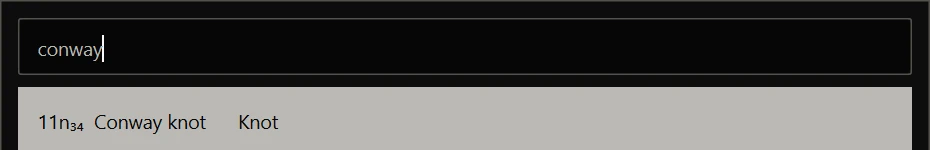
Moving the view
| Do this | To |
|---|---|
| Drag with the left button | Turn the view around the knot |
| Drag with the right button | Move the view |
| Scroll wheel | Zoom |
| Reset view | Turn to the clearest view of the knot and fit it in the window |
| F11 / Esc | Full screen on and off |
Choosing a knot
The knot list
- Unknot, Trefoil (3₁), Figure-eight (4₁), Cinquefoil (5₁) and Stevedore (6₁).
- DNA Double Helix and Celtic Armor: structures of several strands. For these the program shows linking numbers. Tools that need one closed curve say so.
- Custom Torus T(p,q): type two whole numbers from 1 to 20. If p and q share a factor, you get a link of several loops.
- Custom Curve: your own formula or list of points.
- Knot Table: any of the 12,965 knots in the browser.
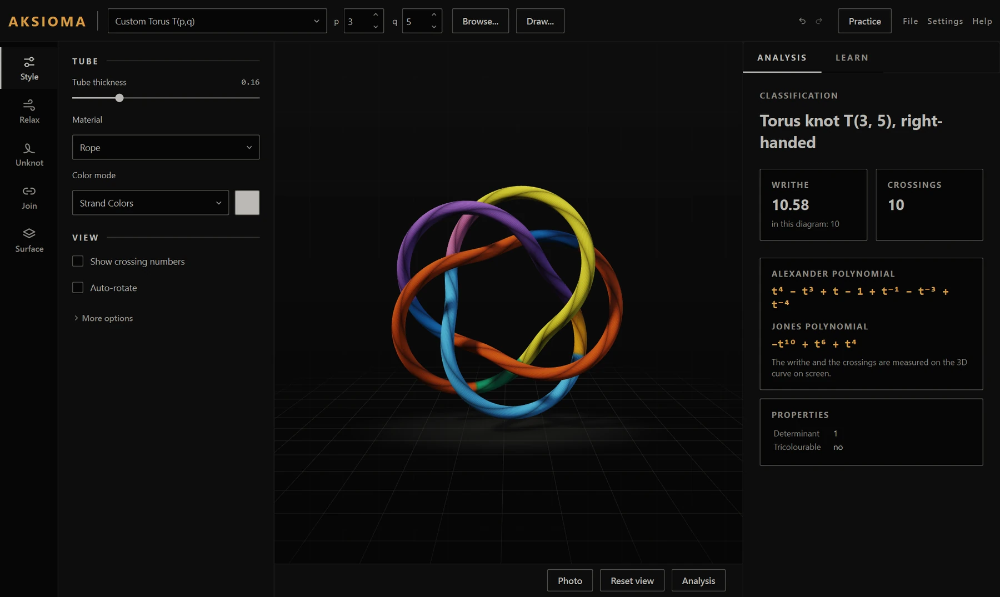
The Knot Browser
Browse... opens every prime knot with up to 13 crossings.
- Search by name (
8_19,11n34) or by a word such as trefoil or Conway. - Filter by number of crossings, and by Alternating, Non-alternating, Fibered or Amphicheiral.
- Click a knot to see it turn in 3D with its properties. Load knot, or a double click, takes it to the main window.

Custom curves
Choose Custom Curve. Write three formulas in t, which runs from 0 to 2π:
x = cos(3t + 0.7)
y = cos(2t + 0.2)
z = cos(7t)or one point per line as x, y, z. Press APPLY or Ctrl Enter. The Examples menu fills in a working curve. A curve that does not close by itself has its ends joined with a straight piece, and the program says so. The full list of functions is in the formula reference.

Drawing a knot
Draw... opens a blank sheet. Hold the left button, draw one loop that crosses itself, and let go. Crossings are found automatically.
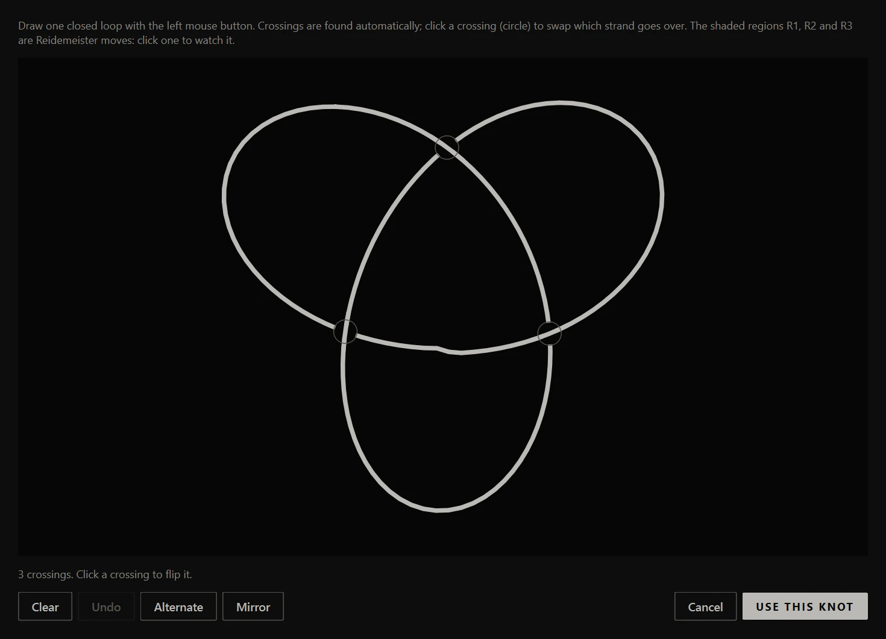
- Click a crossing (the circle) to swap which strand goes over.
- Alternate makes the whole curve go over, under, over, under.
- Mirror swaps every crossing.
- Undo (Ctrl Z) and Clear do what they say.
- Shaded regions marked R1, R2 or R3 are places where a Reidemeister move is possible. Point at one to see which it is; click it to watch it happen. R1 removes a twist, R2 pulls two strands apart, R3 slides a strand across a crossing. None of them changes the knot.
Press USE THIS KNOT to see it in 3D.
When strands lie too close
One tight spot makes the whole tube thin, so the program rings such places and shows a Check your knot screen. There you can use Spread apart (the knot stays the same), Flip crossing or Remove loop (either can change the knot, and the program tells you), go Back to drawing, or Use it anyway.
Reading the analysis
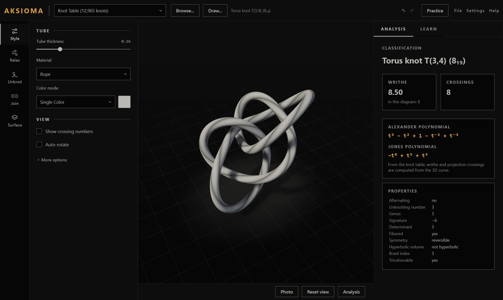
| Field | Meaning |
|---|---|
| Classification | The knot's name, and for chiral knots whether it is left- or right-handed. |
| Writhe | How much the 3D curve coils. It depends on the shape, so the same knot drawn differently has a different writhe. Below it, the writhe of the diagram. |
| Crossings | Crossings seen from the current direction. The true crossing number is added when it is known. |
| Alexander polynomial | A classical invariant. It cannot tell a knot from its mirror image. |
| Jones polynomial | A stronger invariant that usually does tell mirror images apart. |
| Properties | For knots in the table: alternating, unknotting number, genus, signature, determinant, fibered, symmetry, hyperbolic volume, braid index and whether it can be tricoloured. |
The grey note under the polynomials says how each value was obtained.
"Probably" means probably. If two knots have different polynomials, they are different. Equal polynomials do not prove that two knots are the same. So a curve you drew or typed is named with "Probably".
The Learn tab explains these ideas for the knot on screen, and what the current colour mode shows.
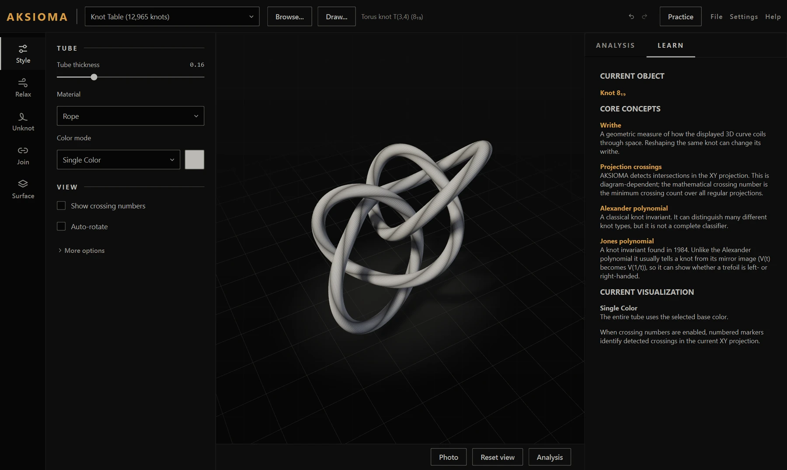
Style
Style changes only how the knot looks, never the mathematics.
| Control | What it does |
|---|---|
| Tube thickness | Radius of the tube. If strands would touch, the program draws it thinner and shows both numbers. |
| Material | Rope, Glossy, Satin or Metal. |
| Color mode | Single Color; Crossing Colors, where each crossing has a colour; or Strand Colors, one colour for each arc between two under-crossings. The square beside it picks the tube colour. |
| Show crossing numbers | Numbered markers on the crossings seen from the XY direction. |
| Auto-rotate | The knot turns slowly, good for presenting. |
| More options | Curve density (points along the curve) and Material shine. |
Double-click a slider to return it to its usual value. Click a slider's number to type an exact one.
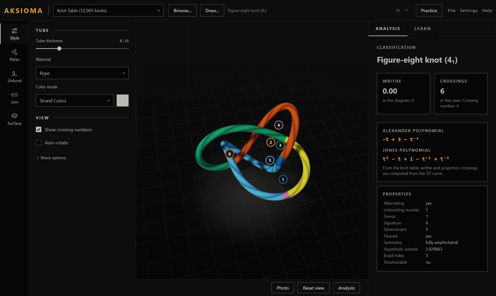
Relax and grab
Open with Ctrl 2. These work on a single closed curve.
- Relax lets the knot settle: every part pushes the others away while the string keeps its length. Space starts and pauses.
- Scramble tangles it first, so you can watch it find its way back.
- Reset returns the original shape.
Strands never pass through each other, so the knot type cannot change. Watch the classification stay the same as the picture changes.
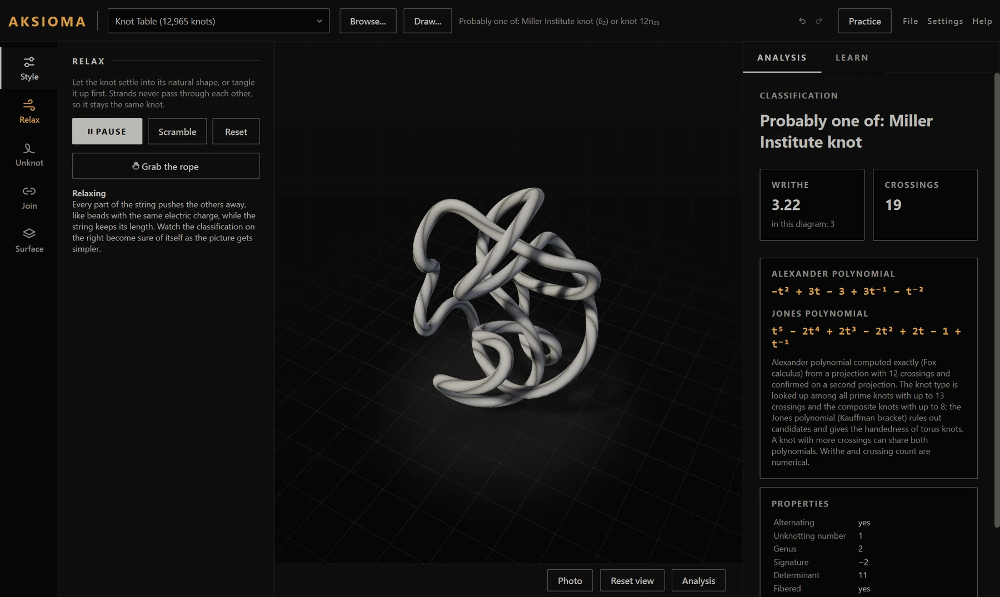
Grab the rope
Turn on Grab the rope and drag a strand with the left button: the rest follows. Drag next to the rope to turn the view instead. Esc lets go.
In Photo mode grabbing does more: the rope lies on the table, and you can cut it and tie it again.
Unknot
Open with Ctrl 3. The animation shows how any knot becomes a plain circle if strands may pass through each other. That move, a crossing change, is impossible for real rope, and it is the only thing that can change a knot.
The stages are: choosing a viewpoint, a knot diagram, each crossing change in turn, downhill all the way, pulling it open, and a plain circle.
| Control | What it does |
|---|---|
| Unknot / Pause / Play | Start, pause and continue (Space). |
| Timeline | Drag to any moment. ← and → step. |
| Speed | 0.25×, 0.5×, 1×, 2× or 4×. |
| Step by step | Pauses at every stage. Good for teaching. |
| Steps | A list of every crossing change with the diagram before and after; Show in 3D jumps there. |
| Reset | Back to the original knot. |

The number of changes used is an upper bound for the knot's unknotting number: there may be a way with fewer.
With Photo mode on, the rope on the table is undone, and at the end the loose loop falls and lies as the unknot.
Join
Open with Ctrl 4. Join makes the connected sum K₁ # K₂ of the knot on screen and a second one.
- Pick the Second knot: Trefoil, Figure-eight, Cinquefoil, Stevedore, the same as the current knot, or one from the knot table.
- Tick Mirror image of the second knot if you want its reflection.
- Press Join. The four stages are: two knots, cut, the band, one knot.
The analysis then shows the joined knot, whose Alexander and Jones polynomials are the products of those of the two parts. Joining with the unknot changes nothing.
Surface
Open with Ctrl 5 and press Build surface. A Seifert surface is a two-sided surface whose edge is the knot. It builds in five steps; move between them with the slider or the arrow keys.

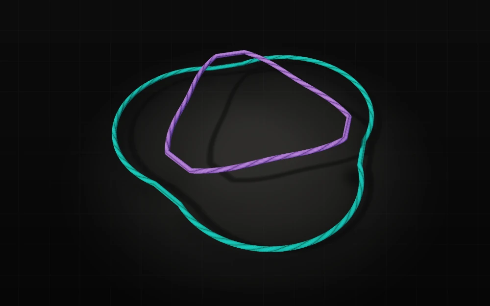


- Genus is the number of "handles". The knot's genus is the smallest over all its surfaces; only the unknot has genus 0.
- Seifert matrix V holds linking numbers of loops on the surface. Click an entry to see its loops: green on the surface, pink lifted off the amber side. The signature, determinant and Alexander polynomial follow from it.
- Made of: two-coloured cloth, which shows the two sides, or a soap film.
- How to read this opens a short explanation of what you see.
For a few knots the program cannot pull the sheet tight; the slider then stops at step 4 and the panel says why.
Photo mode
Press Photo in the view bar. The knot becomes a real object: it falls under its own weight and comes to rest. A list beside the button chooses the scene. Photo always opens on the rope on the garden table.
| Scene | What you get |
|---|---|
| Hemp rope on a garden table, in the sun | Twisted hemp rope on dark stone. |
| Shoelace on boards in a meadow, in the sun | A braided lace on wooden boards. |
| Model train, at night | A railway shaped like the knot, with a steam train. |
| Model train, by day | The same railway in daylight. |
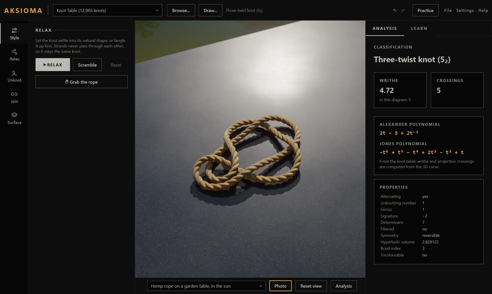
Take the rope in your hand
Open Relax and turn on Grab the rope.
- Drag the rope. The part you hold is lifted over the other strands.
- Hold Shift while grabbing to push it under them.
- Cut the rope gives it two free ends. Move them about and tie something new.
- After every move the ends are joined over the top and the program names the knot you would get.
- Tie the ends makes that knot the knot on screen, ready for every other tool.


The toy train
The knot becomes one closed track on which every crossing is a bridge. The panel at the top of the picture is the knot's Gauss code, live: each bridge is numbered in the order first met, and the train passes each one twice, once over and once under.
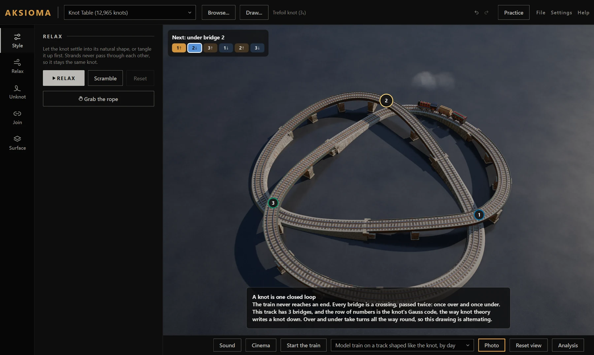
- Stop the train for a sharp picture, or start it again.
- Cinema films the knot by itself: from around, from above, from low down, and one bridge up close. Click the view, scroll, or press the button again to stop.
- Sound turns on steam, wheels, the whistle and, at night, crickets.
The train takes single knots of up to 13 crossings. A large track can take some seconds to build, and a knot with no workable layout stays a tube with a notice.
Practice
Practice, at the top, opens exercises on a knot diagram. Work on the Current knot, a Mystery knot (3 to 8 crossings, named when you finish) or one you Draw.
Tricolouring
An arc runs from one under-crossing to the next. Give each arc one of three colours so that at every crossing the three arcs are all the same or all different, using at least two colours.
- Pick a colour (keys 1 2 3), then click arcs. Right-click removes a colour.
- A crossing that breaks the rule is ringed.
- Hint, It can't be done and Show a solution are there when you need them.
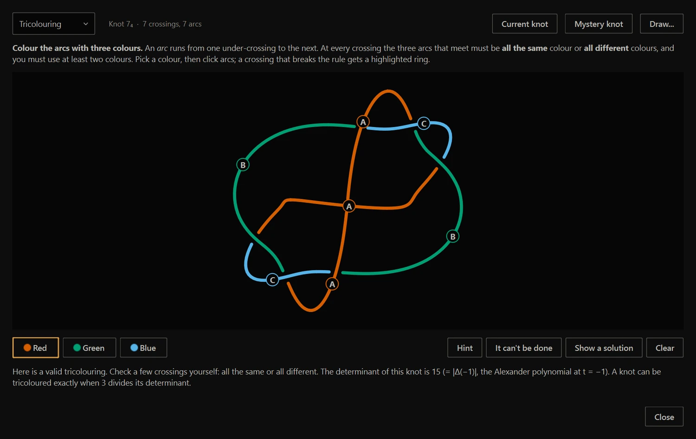
A valid tricolouring proves the knot is not the unknot. Having none proves nothing: the figure-eight knot has none, and it is knotted.
Crossing signs
Look along the over strand. If the under strand passes from your right to your left, the crossing is +1, otherwise −1. Click crossings to mark them, then Check. Their sum is the writhe of the diagram.
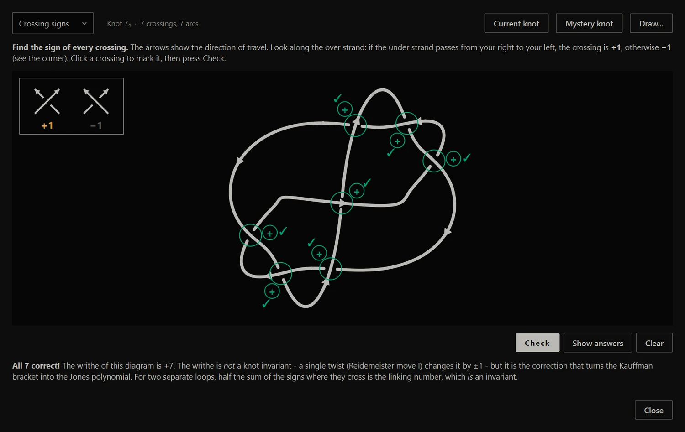
Saving and exporting
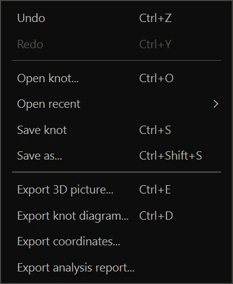
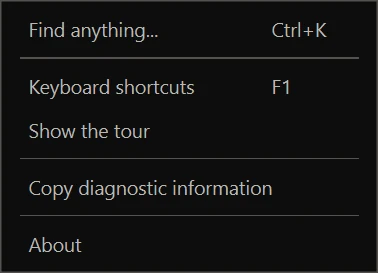
- Save knot writes an
.aknotfile with the knot, its shape and its look. - Open accepts
.aknot, and.txtor.csvfiles of points or formulas. You can also drag a file onto the window, or pick it from Open recent. - Export 3D picture saves what the view shows, Photo mode included, as PNG or JPEG.
- Export knot diagram saves a black-on-white drawing as SVG or PNG.
- Export coordinates saves the points of the curve as TXT or CSV.
- Export analysis report saves the numbers as a text file.
Exact formats are in the docs.
Undo and recovery
Ctrl Z and Ctrl Y undo and redo changes of knot, scramble, relax and style. While the rope is in your hand its moves are not separate steps; undo lays it down afresh.
The knot you are working on is saved automatically. If the program closed before you saved, the next start offers to restore it.
Settings
Settings, or Ctrl ,. Changes are saved at once.
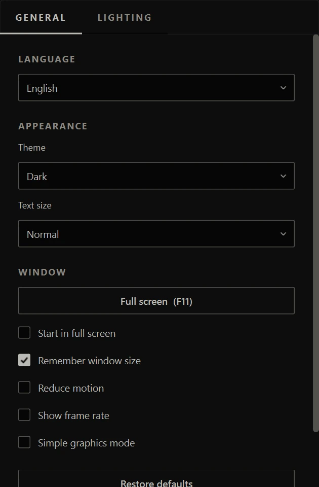
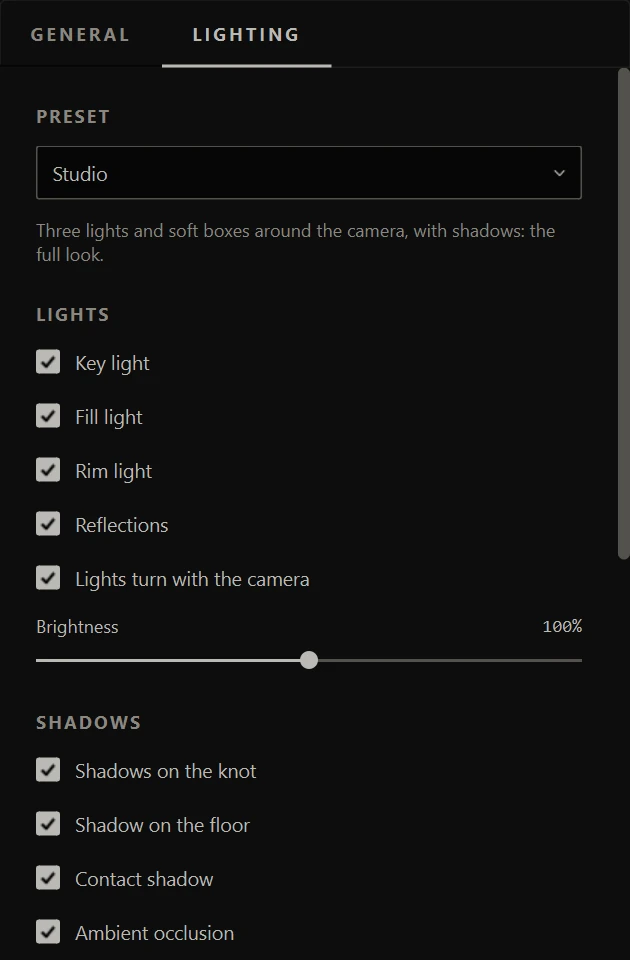
General
- Language: English or Shqip. Your knot is kept.
- Theme: Dark or Light. Text size: Small, Normal, Large or Extra large.
- Window: full screen, start in full screen, remember window size.
- Reduce motion stops the drifting background and the turning knot.
- Simple graphics mode is for a computer whose 3D view stays black. It is slower, has no Photo mode and takes effect at the next start.
- Show frame rate puts the speed of drawing in a corner of the view.
- Restore defaults resets every setting, after asking.
Lighting
- Presets: Studio (the full look), Soft, Dramatic, Flat (clear on paper and projectors) and Custom.
- Individual lights, reflections, brightness, shadows and shadow quality.
- Photo quality: Automatic keeps Photo mode smooth on your computer; or choose High, Medium or Low.
- Floor grid on or off, and a meter of graphics memory.
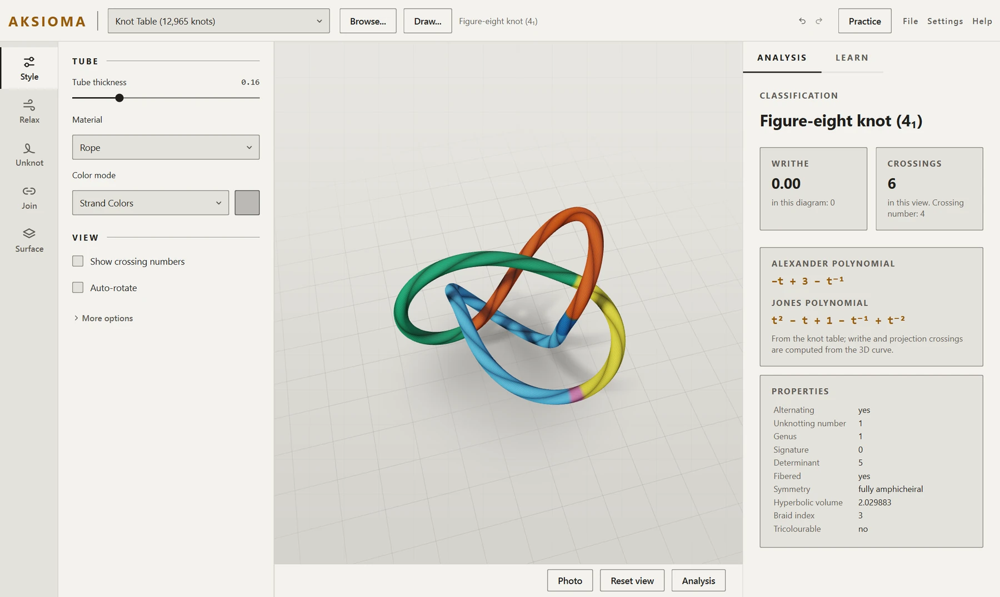
Shortcuts
Press F1 or ? in the program to see them.
| Keys | Anywhere |
|---|---|
| Ctrl K | Find anything |
| Ctrl Z / Ctrl Y | Undo and redo |
| Ctrl O / Ctrl S | Open and save a knot |
| Ctrl Shift S | Save as |
| Ctrl E / Ctrl D | Export the picture and the diagram |
| Ctrl , | Settings |
| F11 / Esc | Full screen on and off |
| F1 / ? | The list of shortcuts |
| Keys | Tools |
|---|---|
| Ctrl 1 … 5 | Style, Relax, Unknot, Join, Surface |
| Space | Play or pause what the open tool does |
| ← / → | Step back and forward in unknotting and surface |
| Ctrl Enter | Apply a custom curve |
| Esc | Let go of the rope, or pause relaxing or unknotting |
Troubleshooting
| Problem | What to do |
|---|---|
| "Windows protected your PC" | Choose More info, then Run anyway. |
| The 3D view stays black, or says it needs OpenGL 3.3 | Update the graphics driver. If that does not help, turn on Settings > Simple graphics mode and restart. |
| Photo mode is slow | Settings > Lighting > Photo quality: choose Automatic or Low. |
| "…needs a single closed curve" | DNA, Celtic Armor and some torus links have several loops. Choose a single knot. |
| No diagram can be made | Relax the knot first: it often clears up a crowded curve. |
| A button is greyed out | Point at it. The tooltip says why. |
| Reporting a bug | Use Help > Copy diagnostic information and paste it into a new issue. |
Glossary
| Word | Meaning |
|---|---|
| Knot | A closed loop in space that does not cross itself. |
| Unknot | A loop that can be deformed into a plain circle. |
| Link | Several closed loops, possibly tangled together. |
| Diagram | A flat picture of a knot that shows which strand goes over at each crossing. |
| Crossing number | The smallest number of crossings in any diagram of the knot. |
| Unknotting number | The fewest crossing changes that turn the knot into the unknot. |
| Reidemeister moves | Three local changes of a diagram that never change the knot. |
| Mirror image | The reflected knot. A knot is chiral if it differs from its mirror image. |
| Amphicheiral | Equal to its mirror image, like the figure-eight knot. |
| Alternating | Has a diagram where the crossings go over, under, over, under all the way round. |
| Prime knot | A knot that is not a connected sum of two simpler knots. |
| Torus knot | A knot that lies on the surface of a doughnut. |
| Gauss code | The crossings in the order you meet them walking along the knot, each marked over or under. |
| Genus | The smallest number of handles of a surface whose edge is the knot. |